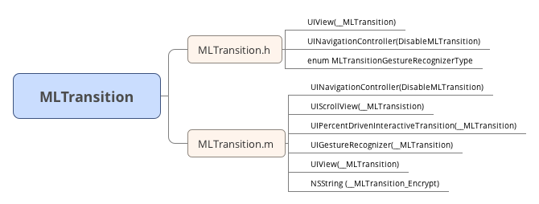

感谢@molon 开源这些优秀的代码
源码地址:https://github.com/molon/MLTransition
最好把源码下下来，方便接下来的阅读
我整理了源码目录的定义
####① 代码架构

####② 一句话启用
MLTransition 使用方式叫做一句话启用，在AppDelegate加入这句代码，这句代码是
+ (void)validatePanBackWithMLTransitionGestureRecognizerType:(MLTransitionGestureRecognizerType)type;
后面是个枚举类型，看下枚举类型是怎么定义的
typedef enum {
MLTransitionGestureRecognizerTypePan, //拖动模式
MLTransitionGestureRecognizerTypeScreenEdgePan, //边界拖动模式
} MLTransitionGestureRecognizerType;
边界拖动模式就限制了target >7.0 ，从后面的代码也可以知道拖动模式也要版本7.0+
查看validatePanBackWithMLTransitionGestureRecognizerType 的实现方法
static dispatch_once_t onceToken;
dispatch_once(&onceToken, ^{
__MLTransitionGestureRecognizerType = type;
__MLTransition_Swizzle([UINavigationController class],@selector(viewDidLoad),@selector(__MLTransition_Hook_ViewDidLoad));
});
这里比较重要的就是__MLTransition_Swizzle hook 方法，作者用了runtime 来交换了实现方法，__MLTransition_Swizzle 是个C方法，它的的参数类型如下
//c 方法 参数1 要交换的类， 参数2 旧的(或系统)方法 ，参数3 自定义方法
####③ hook 方法
//静态就交换静态，实例方法就交换实例方法
void __MLTransition_Swizzle(Class c, SEL origSEL, SEL newSEL)
{
//获取实例方法
Method origMethod = class_getInstanceMethod(c, origSEL);
Method newMethod = nil;
//若origSEL 不存在 则获取 ，这里传的是系统方法viewDidLoad 所以必然存在 一定会跳转到else
if (!origMethod) {
//获取静态方法
origMethod = class_getClassMethod(c, origSEL);
newMethod = class_getClassMethod(c, newSEL);
}else{
//新方法是__MLTransition_Hook_ViewDidLoad 按理说UINavigationController没有这个方法 是获取不到这个方法的，但是我们newSEL的实现 (类别)
newMethod = class_getInstanceMethod(c, newSEL);
}
//必要性判断
if (!origMethod||!newMethod) {
return;
}
//自身已经有了就添加不成功，直接交换即可 class_addMethod返回是个bool 值
if(class_addMethod(c, origSEL, method_getImplementation(newMethod), method_getTypeEncoding(newMethod))){
//添加成功一般情况是因为，origSEL本身是在c的父类里。这里添加成功了一个继承方法。
//四个参数解读（见下文）
class_replaceMethod(c, newSEL, method_getImplementation(origMethod), method_getTypeEncoding(origMethod));
}else{
method_exchangeImplementations(origMethod, newMethod);
}
//hook 结束后 就要执行hook 方法
}
其中 class_addMethod/class_replaceMethod 的参数说明，method_getImplementation 获取函数指针(地址)，method_getTypeEncoding(newMethod) po 出来的值 “v16@0:8” 是将数据类型编码成char＊（字符串）形式，举例
-(void)hello v16@0:8 -(id)hello:(id)x @24@0:8@16 -(void)hello:(id)x :(id)e v32@0:8@16@24 解读： 按照文档上的说明，和objc_msgSend的参量顺序 A void v A method selector (SEL) ： An object (whether statically typed or typed id) @ 进行拆解解读 v16（返回类型为空） @0（receiver id类型） :8（SEL标示） v32（返回类型为空） @0（receiver id类型） :8（SEL标示）@16（参量 id类型）@24（参量 id类型）
④ newSEL的实现
- (void)__MLTransition_Hook_ViewDidLoad
{
[self __MLTransition_Hook_ViewDidLoad];
if (!self.__MLTransition_panGestureRecognizer&&[self.interactivePopGestureRecognizer.delegate isKindOfClass:[UIPercentDrivenInteractiveTransition class]]) {
UIPanGestureRecognizer *gestureRecognizer = nil;
\#define kHandleNavigationTransitionKey [@"nTShMTkyGzS2nJquqTyioyElLJ5mnKEco246" __mlDecryptString]
if (__MLTransitionGestureRecognizerType == MLTransitionGestureRecognizerTypeScreenEdgePan) {
gestureRecognizer = [[UIScreenEdgePanGestureRecognizer alloc] initWithTarget:self.interactivePopGestureRecognizer.delegate action:NSSelectorFromString(kHandleNavigationTransitionKey)];
((UIScreenEdgePanGestureRecognizer*)gestureRecognizer).edges = UIRectEdgeLeft;//设置左边界滑动
}else{
gestureRecognizer = [[UIPanGestureRecognizer alloc] initWithTarget:self.interactivePopGestureRecognizer.delegate action:NSSelectorFromString(kHandleNavigationTransitionKey)];
}
gestureRecognizer.delegate = self;
gestureRecognizer.__MLTransition_NavController = self;
self.__MLTransition_panGestureRecognizer = gestureRecognizer;
self.interactivePopGestureRecognizer.enabled = NO;
}
[self.view addGestureRecognizer:self.__MLTransition_panGestureRecognizer];
}
实现部分是最核心的部分，看懂这部分 基本上就知道原理了，其他都是一些优化，
注意__MLTransition_Hook_ViewDidLoad方法 的位置，是UINavigationController的类别，这点也是很重要，下面继续看作者的思路，
第一句是这样写的
[self __MLTransition_Hook_ViewDidLoad]; 注意，我们交换了方法，这句话看似调用了自己本身，但是其实是调用了origSEL 交换之前的方法,这里就是父类的viewDidLoad。if 判断
!self.__MLTransition_panGestureRecognizer&&[self.interactivePopGestureRecognizer.delegate isKindOfClass:[UIPercentDrivenInteractiveTransition class]]
!self.__MLTransition_panGestureRecognizer 这句还好理解，self.interactivePopGestureRecognizer.delegate好像从来没用过；
其实确实有是UINavigationController的一个属性，不过是readonly，interactivePopGestureRecognizer它继承自UIPanGestureRecognizer，出现在IOS7以后，是专门处理在屏幕边缘触发的手势类型，并且只有一个属性叫edges，用来设置它的触发边缘（上、下、左、右、全部），打印日志，查看了它的触发target:_UINavigationInteractiveTransition（这是一个私有类，看来是专门用来做导航控制器交互动画的），和action:handleNavigationTransition（这是它的一个私有方法），我们要做的就是新建一个UIPanGestureRecognizer，让它的触发和系统的这个手势相同，这就需要利用runtime获取系统手势的target和action。(不得不佩服作者的天才思路)。 (详细了解戳这里http://www.jianshu.com/p/d39f7d22db6c )。
理解了是什么意思，再来看这个if判断,self.__MLTransition_panGestureRecognizer 未赋值 第一次一定为空，[self.interactivePopGestureRecognizer.delegate isKindOfClass:[UIPercentDrivenInteractiveTransition class]也会成立;
注意在iOS7中，如果使用了UINavigationController，那么系统自带的附加了一个从屏幕左边缘开始滑动可以实现pop的手势。但是，如果自定义了navigationItem的leftBarButtonItem，那么这个手势就会失效。(这里并不会有这个问题)。接下来的局部宏定义
#define kHandleNavigationTransitionKey [@"nTShMTkyGzS2nJquqTyioyElLJ5mnKEco246" __mlDecryptString]
最开始我看这句百思不得其解，不知道为什么作者这样写，后来仔细查了资料，才明白作者的天才思路，(1)nTShMTkyGzS2nJquqTyioyElLJ5mnKEco246 之所以这样写是因为 （UIGestureRecognizer 的targets）handleNavigationTransition: 这个是私有api
(2)为了避免被拒 所以用 __mlEncryptString 绕了下 并把这个handleNavigationTransition:方法进行base64 编码
(3)这里做的就是要做的就是新建一个UIPanGestureRecognizer，让它的触发和系统的这个手势相同，这就需要利用runtime获取系统手势的target和action。
(4)这就是NSString 类别所在的原因私有api调用
if (__MLTransitionGestureRecognizerType == MLTransitionGestureRecognizerTypeScreenEdgePan) { gestureRecognizer = [[UIScreenEdgePanGestureRecognizer alloc] initWithTarget:self.interactivePopGestureRecognizer.delegate action:NSSelectorFromString(kHandleNavigationTransitionKey)]; ((UIScreenEdgePanGestureRecognizer*)gestureRecognizer).edges = UIRectEdgeLeft;//设置左边界滑动 }else{ gestureRecognizer = [[UIPanGestureRecognizer alloc] initWithTarget:self.interactivePopGestureRecognizer.delegate action:NSSelectorFromString(kHandleNavigationTransitionKey)]; }虽然写了手势，但是其实调用的是私有方法。
代理设置，记录导航等
gestureRecognizer.delegate = self; //记录手势所在的导航？ gestureRecognizer.__MLTransition_NavController = self;self.__MLTransition_panGestureRecognizer = gestureRecognizer; //这个手势识别一定要设置为NO 即不启用 self.interactivePopGestureRecognizer.enabled = NO;最后添加到view ，[self.view addGestureRecognizer:self.__MLTransition_panGestureRecognizer]; 我们创建的手势最后调用的实际是handleNavigationTransition 这个系统的私有方法。
⑤ 对手势代理方法的处理
- (BOOL)gestureRecognizerShouldBegin:(UIPanGestureRecognizer *)recognizer
{
UINavigationController *navVC = self;
/**
* 这时候前面提到的用处甚少的转场协调器(Transition Coordinator)将在这里派上用场。
* 该对象可通过 UIViewController 的transitionCoordinator()方法获取，这是 iOS 7 为自定义转场新增的 API，
* 该方法只在控制器处于转场过程中才返回一个与当前转场有关的有效对象，其他时候返回 nil
* 也就是说正在转场(动画)不执行手势 ,没有子viewcontroller 也不执行拖返手势
*/
if ([navVC.transitionCoordinator isAnimated]||
navVC.viewControllers.count < 2) {
return NO;
}
//如果当前view 被禁用 也不执行 (关联对象方式)
UIView* view = recognizer.view;
if (view.disableMLTransition) {
return NO;
}
CGPoint loc = [recognizer locationInView:view];
//获取当前响应的view
UIView* subview = [view hitTest:loc withEvent:nil];
//检测当前子视图是否忽略拖返
UIView *superView = subview;
while (superView!=view) {
if (superView.disableMLTransition) { //这个view忽略了拖返
return NO;
}
superView = superView.superview;
}
//普通拖曳模式，如果开始方向不对即不启用 （边界的话只支持左边界）
if (__MLTransitionGestureRecognizerType==MLTransitionGestureRecognizerTypePan){
CGPoint velocity = [recognizer velocityInView:navVC.view];
if(velocity.x<=0) {
//NSLog(@"不是右滑的");
return NO;
}
CGPoint translation = [recognizer translationInView:navVC.view];
translation.x = translation.x==0?0.00001f:translation.x;
//计算角度
CGFloat ratio = (fabs(translation.y)/fabs(translation.x));
//因为上滑的操作相对会比较频繁，所以角度限制少点 (监控滑动)
if ((translation.y>0&&ratio>0.618f)||(translation.y<0&&ratio>0.2f)) {
//NSLog(@"右滑角度不在范围内");
return NO;
}
}
return YES;
}
剩余都是作者对这个扩展的一些优化，作者也有注释。
参考文档：
http://www.cnblogs.com/ioooooos/p/3617213.html
http://www.jianshu.com/p/d39f7d22db6c
http://www.cocoachina.com/ios/20150610/12076.html
__END__

文章出处：【读源码】系列之(二)MLTransition
作者签名：所有伟大的事情都源于梦想，始于微不足道.
关于主题：Hexo - Live For Code
版权声明：文章除特别声明外，均采用 BY-NC-SA 许可协议，转载请注明出处